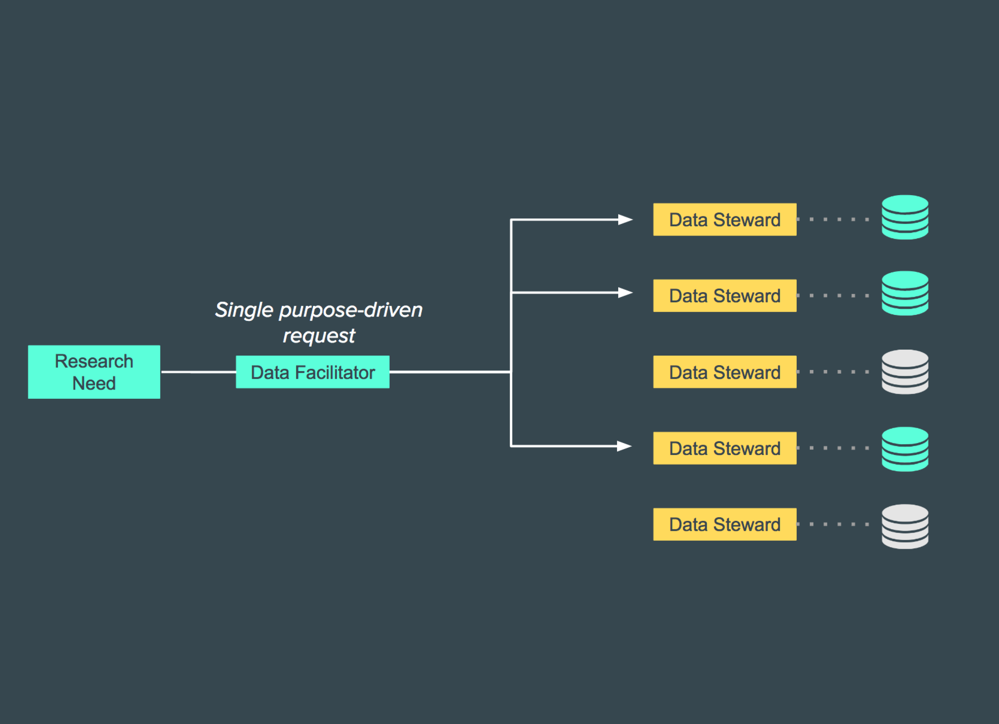
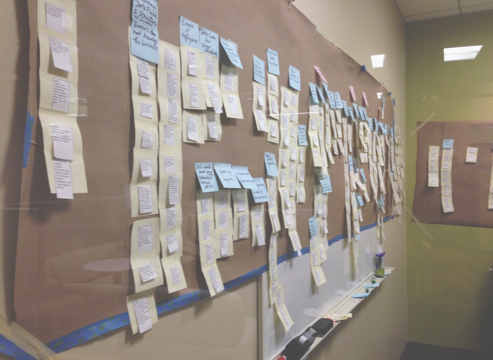
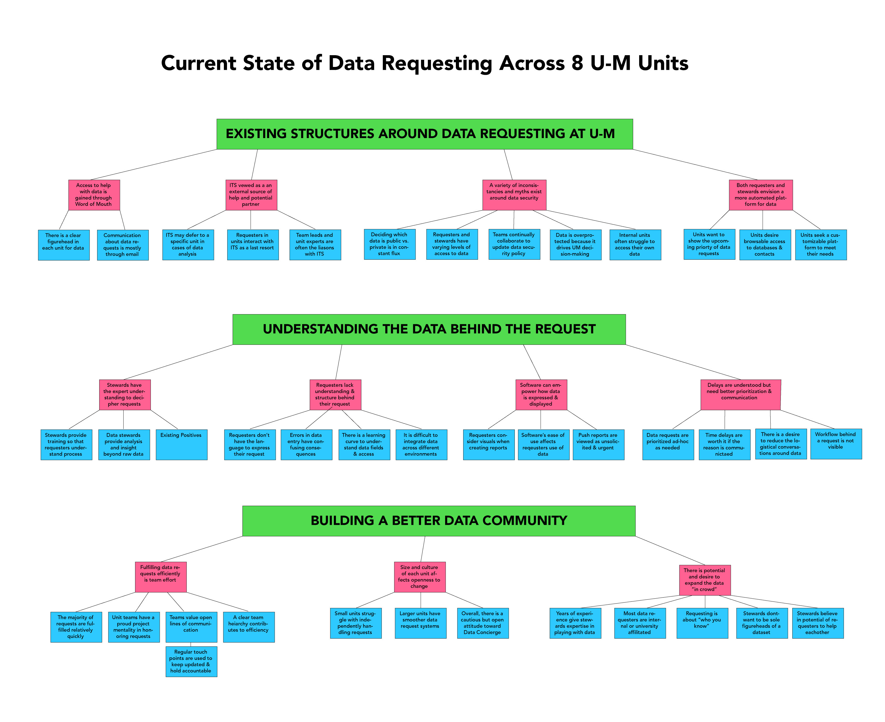
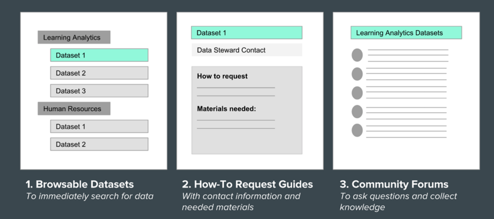
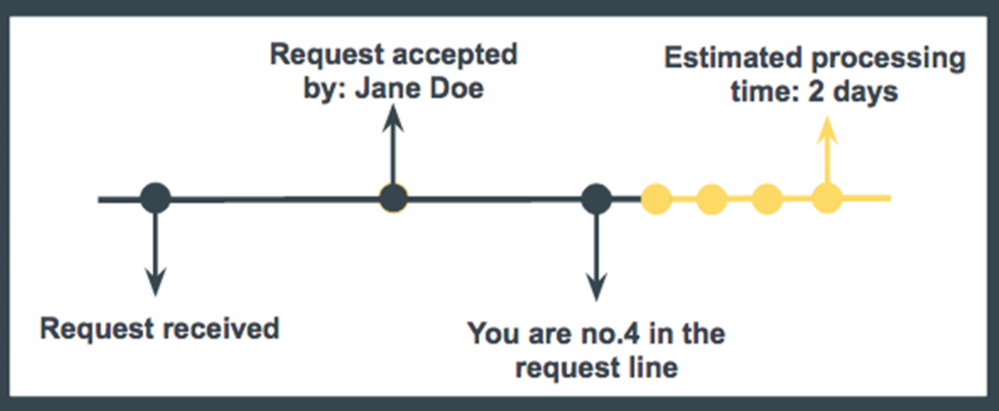
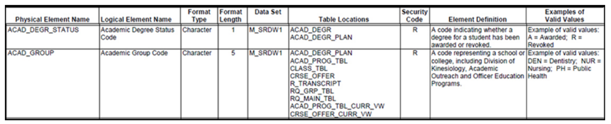

data concierge
Strengthening the data community at the University of Michigan.

Role: Consultant, UX Researcher
Project Type: Client-based team consulting project for SI 501: Contextual Inquiry at the University of Michigan
Team: Julie Cruz, John Posch, Ling Zhong
Timeline: September – December 2016
Software: Sketch
Methods: Contextual Interviews, Affinity Mapping
the client

Our client is a newly-formed department within the university that supports higher-level university administrators and executives with their data needs and envisions a ‘data-as-a-service’ delivery model.
the opportunity
Data requesters across university departments are often inconvenienced by long wait times and nonresponsive outcomes after placing a data request with another unit. Our client began development of a ‘Data Concierge’ platform to serve as a one-stop-shop for requests to be triaged and fulfilled.
goals
Our team investigated ways in which the Data Concierge could facilitate data requesting at U-M over time, with two overarching research questions guiding our process:
- What are the specific steps, challenges, and opportunities that currently exist in the data requesting process at U-M?
- How do the stakeholders feel about the data request process, and how could they accomplish their data needs in a more efficient and satisfying way?
methods
Our group first conducted background research in:
- Data stewardship roles and responsibilities
- Data hierarchies and documented system limitations at the University of Michigan
- The implementation of business intelligence using data systems in higher education
- Data-as-a-service and its implementation in higher education
We then conducted contextual interviews and performed field observations with stakeholders located in 8 different units across the university. Through an extensive affinity diagramming process, our team categorized interview content, quotes, and other contextual information to uncover some affirming and also surprising insights into the data request process.
 findings and recommendations
Finally, we developed a report of our findings and recommendations, summarized below, which we presented to our client team of over 30 project managers, developers, and information architects.
A full version of our report is available upon request.
Recommendation 1: Develop a browsable catalog and interactive data community forum to assist data requesters when they are not sure what to request, who to request from, or how to properly express their needs to data stewards.
Recommendation 2: Implement a visual workflow process of request so requesters can track of the status of their request fulfillment.
Recommendation 3: Integrate an interactive and customizable Memorandum of Understanding to streamline the approval process and reduce logistical conversations between stewards and requesters.
Recommendation 4: Build enhanced and searchable data dictionaries to ensure critical usability information is accessible to users browsing data sets.
Recommendation 5: Incorporate purpose-driven facilitators into the data access model to bridge the gap between data silos and empower researchers to collaborate between disciplines.
takeaways
By working on this project, I learned a lot about how communities structure themselves around data and how information systems can be designed to support them. The seven individuals we interviewed provided us with unique perspectives on the current system of the data request process at the university; however, with more time and resources, it would certainly be valuable to gain an even wider range of perspectives; for example, students and outside researchers could have shed light on alternative uses for the platform.